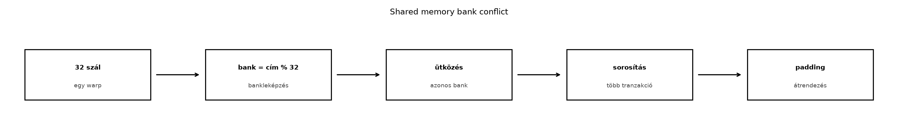

A shared memory a GPU-blokkon belüli adatcsere leggyorsabb programozható felülete. A globális memória nagy késleltetését és a regiszterek szűkösségét úgy hidalja át, hogy a blokk összes szála számára közös, kis méretű, nagy sávszélességű tárolót biztosít. A hatékony használat azonban nem merül ki abban, hogy adatot másolunk bele: a hardver a shared memóriát bankokra osztja, és ha a hozzáférések ütköznek, a kért párhuzamosság elveszik. Ez az alfejezet a bankok működését, az ütközések felismerését és elkerülését tárgyalja, majd egy teljes labor keretében bank conflict mentes transzponálást valósít meg.

A modern NVIDIA GPU-kon a shared memory fizikailag 32
bankból áll (a ma támogatott compute capability-kon – például
Volta, Turing, Ampere, Ada, Hopper – egyaránt 32 bank van; a CUDA
Programming Guide aktuális verziójában érdemes ellenőrizni). Minden bank
egy-egy 32 bites szót tud kiszolgálni egyetlen
memóriaórajel alatt. A bankok címzése a következő: ha egy 32 bites szó a
shared memóriában az s bájtcímen kezdődik, akkor a hozzá
tartozó bank indexe:
bank = (s / 4) % 32Azaz a 4 bájtos szavak sorban, ciklikusan oszlanak el a 32 bank között. Egyetlen warp (32 szál) egyszerre egy utasítást hajt végre; ha mind a 32 szál különböző bankból olvas vagy ír, a memóriaművelet egyetlen tranzakcióban végrehajtható. Ha azonban két vagy több szál ugyanabba a bankba, de különböző címre hivatkozik, a hardver a hozzáféréseket sorba kényszeríti: ez a bank conflict.
A bankok közötti konfliktus tehát nem a shared memória teljes sávszélességét csökkenti, hanem a párhuzamos memória-hozzáférések sorosítását okozza. Egy 32 szálból álló warp esetén, ha mind a 32 szál ugyanabba a bankba ír különböző címekre, a művelet 32 memóriatranzakcióra esik szét. A shared memória késleltetése nagyságrendekkel kisebb a globális memóriáénál, a sorosítás tehát más jellegű költség, mint a nem koaleszkált globális hozzáférés sávszélesség-vesztesége; a lassulás mértéke kernelfüggő (egy 32-utas konfliktus a shared hozzáférést legfeljebb 32-szeresére nyújtja). Ezért a bank conflict elemzése a kerneloptimalizálás egyik alapvető lépése.
A bank conflict pontos definíciója a következő: egy warp két vagy több aktív szála ugyanabba a bankba, de különböző szóra hivatkozik ugyanabban a memóriautasításban. Ha a címek azonosak, az eset broadcast, amit később tárgyalunk. A konfliktus mértékét a legnagyobb számú, azonos bankba eső különböző cím határozza meg. Például ha 8 szál ugyanabba a bankba de különböző címre mutat, akkor az a hozzáférés 8-utas konfliktus, és a hardver 8 tranzakcióra bontja.
Tekintsünk egy egyszerű esetet, amikor egy float tömböt
(32 bites szavak) olvasunk a shared memóriából. A
legegyszerűbb hozzáférési minta a szekvenciális: a
tid azonosítójú szál a s_data[tid] elemet
olvassa. Ekkor:
tid = 0 → bank 0tid = 1 → bank 1tid = 31 → bank 31Minden szál más bankot használ, nincs konfliktus. Ez az ideális eset.
Most változtassuk meg a lépésközt stride 2-re: a
szál s_data[2 * tid]-et olvas. Ekkor:
tid = 0 → bank 0tid = 1 → bank 2tid = 2 → bank 4tid = 15 → bank 30tid = 16 → bank 0 (mert 32 % 32 = 0)tid = 17 → bank 2Itt a 0. és a 16. szál ugyanabba a bankba (0. bank) mutat, de különböző elemekre. Hasonlóan az 1. és 17. szál a 2. bankba, és így tovább. Ez 2-utas bank conflict, mert minden bankot két szál osztozik. A memóriaművelet kétszer annyi időt vesz igénybe, mint a stride 1 eset.
A stride 32 a legrosszabb eset: ha a szál
s_data[32 * tid]-et olvas, mind a 32 szál a 0. bankba mutat
(hiszen a szóindex 32 * tid, és
(32 * tid) % 32 = 0 minden tid-re; bájtcímmel:
(128 * tid / 4) % 32 = 0), és mivel az elemek különbözőek,
32-utas konfliktus alakul ki. Ez 32 memóriatranzakciót
jelent egyetlen warp számára, ami a shared memória sávszélességének
drasztikus csökkenését okozza.
Fontos megjegyezni, hogy a bank indexelés a szó
méretéhez kötődik. Ha double (64 bit) elemeket
tárolunk, akkor minden double két egymást követő bankot
foglal el. Ebben az esetben a tid szerinti szekvenciális
olvasás s_data[tid] (ahol s_data
double*) azt jelenti, hogy a 0. szál a 0. és 1. bankot, az
1. szál a 2. és 3. bankot, stb. használja. Egy warp így 256 bájtot kér,
amit a hardver általában két félwarp-kérésre (két wavefront) bont: ez a
64 bites elérés normális ára, nem bank conflict. Konfliktus csak akkor
jön létre, ha egy félwarp két szála ugyanabba a bankpárba, de különböző
double elemre hivatkozik. Ezért 64 bites típusoknál a bank
indexeket párosával kell vizsgálni.
Amikor egy warp minden aktív szála ugyanazt a 32 bites
szót olvassa a shared memóriából, a hardver nem sorosítja a
hozzáférést, hanem broadcast módban egyszerre
kiszolgálja mind a 32 szálat. Ez egyetlen memóriatranzakció, nincs bank
conflict. Ez az eset akkor áll elő, ha például minden szál
s_data[0]-t olvas.
Az általános szabály szószintű: ugyanazt a 32 bites szót
olvasó tetszőleges számú szál egyetlen kiszolgálásban megkapja
az adatot, akkor is, ha a warp többi szála más bankokat ér el. Például
ha 8 szál az s_data[0]-t olvassa, a többi 24 szál pedig az
s_data[1]…s_data[24] elemeket, akkor nincs
bank conflict (a 0. bankot egyetlen szó, a többit különböző szavak
érik). Ha viszont ugyanabban a bankban különböző szavak vannak, az
konfliktus. A gyakorlatban a broadcast fontos optimalizálási lehetőség,
például konstansok vagy közös adatok megosztásánál.
A bank conflictok elkerülésének egyik leghatékonyabb eszköze a padding, vagyis a tömbök méretének szándékos megnövelése a shared memóriában. A padding célja, hogy a sorhossz (szavakban) relatív prím legyen a bankok számához, így az azonos oszlopindexű, de különböző sorú elemek különböző bankokba kerüljenek.
Tekintsünk egy 32 x 32-es mátrixot, amelyet
__shared__ float tile[32][32] módon deklarálunk. Egy warpon
belül a threadIdx.x változik (0-tól 31-ig), a
threadIdx.y rögzített. A
tile[threadIdx.y][threadIdx.x] elérés soronkénti: a
szomszédos szálak szomszédos szavakat olvasnak, a bank
(32 * y + x) % 32 = x, minden szál más bankba kerül, nincs
konfliktus. A tile[threadIdx.x][threadIdx.y] elérés viszont
oszlopmenti: a szálak 32 szóra lévő elemeket olvasnak, a bank
(32 * x + y) % 32 = y, vagyis mind a 32 szál ugyanabba a
bankba (a threadIdx.y-adikba) mutat különböző szavakra, ami
32-utas konfliktus.
A padding ezt úgy oldja meg, hogy a tömb sorhosszát 33-ra növeli:
__shared__ float tile[32][33]. Ekkor a második sor
kezdőcíme 33 * 4 = 132 bájt, a bank index pedig
132 / 4 % 32 = 33 % 32 = 1, a harmadik sor a 2. bankra
kerül, és így tovább. Az oszlopmenti
tile[threadIdx.x][threadIdx.y] elérésnél a bank index
(33 * threadIdx.x + threadIdx.y) % 32 = (threadIdx.x + threadIdx.y) % 32.
Mivel egy warpon belül threadIdx.y rögzített és
threadIdx.x 0-tól 31-ig fut, a 32 érték különböző, a
konfliktus megszűnik.
Általános feltétel: a sorhossz szavakban számolt L
értékére az oszlopmenti hozzáférés (a sorindex változik, a szálak
L szavas lépésközzel érik el az elemeket) pontosan akkor
konfliktusmentes, ha gcd(L, 32) = 1, azaz L
páratlan. A 32 többszöröse (például 32, 64) a legrosszabb eset; a páros,
de nem 32-többszörös sorhossz részleges konfliktust ad, például
L = 34 esetén 34 * y % 32 = 2 * y % 32, így
y és y + 16 azonos bankba esik: 2-utas
konfliktus.
A padding ára a megnövelt shared memory fogyasztás: a 32×32-es tömb helyett 32×33-asat használunk, ami 32 extra float (128 bájt) többletet jelent. Ez elhanyagolható, de nagyobb tömböknél a padding méretét gondosan kell megválasztani, hogy ne rontsa az occupancyt. A padding értéke a gyakorlatban 1 (páratlan sorhossz); a 34-es sorhossz a fenti miatt nem jó választás oszlopmenti hozzáféréshez.
A bank conflictok gyakorlati szemléltetésére a mátrix transzponálása
kiváló példa. Három szintet különböztetünk meg: (1) a valóban naiv,
shared memória nélküli transzponálást, ahol a globális írás strided; (2)
a shared memóriás tile-os változatot padding nélkül (ez a globális
hozzáférést coalescedre rendezi, de a shared olvasás 32-utas
konfliktusos); (3) a paddingelt tile-t. E szakasz a (2) és (3) kernelt
mutatja be, a labor mindhármat méri. A feladat: egy
N x N-es mátrixot transzponáljunk úgy, hogy az adatokat
először a globális memóriából a shared memóriába másoljuk, majd onnan
transzponált sorrendben írjuk vissza. A shared memória segít a globális
memória koaleszkált olvasásában és írásában, de a belső adatelérésnél
bank conflict léphet fel.
A padding nélküli shared tile kernelje a következő:
// CUDA C++ (C++17), nvcc
#define TILE_DIM 32
__global__ void transpose_shared(const float* __restrict__ input,
float* __restrict__ output,
int width, int height) {
__shared__ float tile[TILE_DIM][TILE_DIM];
int x = blockIdx.x * TILE_DIM + threadIdx.x;
int y = blockIdx.y * TILE_DIM + threadIdx.y;
// Bemenet betöltése shared memóriába (globális olvasás koaleszkált)
if (x < width && y < height) {
tile[threadIdx.y][threadIdx.x] = input[y * width + x];
}
__syncthreads();
// Transzponált kiírás (globális írás koaleszkált, de shared olvasás konfliktusos)
x = blockIdx.y * TILE_DIM + threadIdx.x; // transzponált blokk
y = blockIdx.x * TILE_DIM + threadIdx.y;
if (x < height && y < width) {
output[y * height + x] = tile[threadIdx.x][threadIdx.y]; // oszlop menti olvasás
}
}A kernelben a tile[threadIdx.x][threadIdx.y] olvasás a
shared memóriából egy oszlop mentén történik: egy warpon belül
threadIdx.x változik 0-tól 31-ig, threadIdx.y
rögzített. Mivel a tömb sorhossza 32, a bank index
(32 * threadIdx.x + threadIdx.y) % 32 = threadIdx.y minden
szálra. Így mind a 32 szál ugyanabba a bankba (nevezetesen a
threadIdx.y-adik bankba) mutat, és mivel az elemek
különböző sorokban vannak, 32-utas bank conflict
keletkezik. Ez a shared memória hozzáférést legfeljebb 32-szeresére
nyújtja; a teljes kernelre gyakorolt hatás a globális forgalomhoz
viszonyított aránytól függ.
A megoldás: a shared memória tömb sorhosszát növeljük eggyel:
// CUDA C++ (C++17), nvcc
#define TILE_DIM 32
#define TILE_PADDED 33 // padding a bank conflict elkerülésére
__global__ void transpose_padded(const float* __restrict__ input,
float* __restrict__ output,
int width, int height) {
__shared__ float tile[TILE_DIM][TILE_PADDED];
int x = blockIdx.x * TILE_DIM + threadIdx.x;
int y = blockIdx.y * TILE_DIM + threadIdx.y;
if (x < width && y < height) {
tile[threadIdx.y][threadIdx.x] = input[y * width + x];
}
__syncthreads();
x = blockIdx.y * TILE_DIM + threadIdx.x;
y = blockIdx.x * TILE_DIM + threadIdx.y;
if (x < height && y < width) {
output[y * height + x] = tile[threadIdx.x][threadIdx.y];
}
}A TILE_PADDED = 33 esetén a bank index az oszlop menti
olvasásnál (33 * threadIdx.x + threadIdx.y) % 32 lesz.
Mivel 33 % 32 = 1, ez a kifejezés
(threadIdx.x + threadIdx.y) % 32-re egyszerűsödik. Egy
warpon belül threadIdx.x 0-tól 31-ig fut,
threadIdx.y rögzített, így a bank indexek minden szálra
különbözőek. Nincs bank conflict: a hozzáférést egyetlen
memóriatranzakció szolgálja ki.
A padding mérete a tömb típusától függ: float esetén egy
plusz elem 4 bájt, így a sorhossz 132 bájt = 33 szó. A kulcs, hogy a
sorhossz szavakban páratlan (gcd(L, 32) = 1), nem pusztán
az, hogy ne legyen 32 többszöröse.
A labor célja a bank conflict hatásának mérése és a padding
javításának igazolása. A feladat egy 2048×2048-as float
mátrix transzponálása három kernelverzióval: valóban naiv (shared
memória nélkül, strided globális írással), shared tile padding nélkül
(32×32) és paddingelt (33-as sorhossz). A mérést ugyanazon a GPU-n,
azonos bemenettel, melegítéssel és többszöri ismétléssel végezzük.
A laborhoz a következő izolált környezetet használjuk (példa; a tényleges mérés során a saját hardver adatait kell rögzíteni):
A méréshez a teljes kódot ellenőrzött hibakezeléssel látjuk el.
// CUDA C++ (C++17), nvcc -O3 -arch=sm_80
#include <cstdio>
#include <cstdlib>
#include <cmath>
#include <vector>
#include <algorithm>
#include <cuda_runtime.h>
#define CUDA_CHECK(call) \
do { \
cudaError_t err = (call); \
if (err != cudaSuccess) { \
fprintf(stderr, "CUDA error at %s:%d: %s\n", __FILE__, __LINE__, \
cudaGetErrorString(err)); \
exit(EXIT_FAILURE); \
} \
} while (0)
#define TILE_DIM 32
#define TILE_PADDED 33
// 1. Valóban naiv transzponálás: nincs shared memória, a globális írás strided
__global__ void transpose_global_naive(const float* __restrict__ input,
float* __restrict__ output,
int width, int height) {
int x = blockIdx.x * TILE_DIM + threadIdx.x;
int y = blockIdx.y * TILE_DIM + threadIdx.y;
if (x < width && y < height) {
output[x * height + y] = input[y * width + x];
}
}
// 2. Shared tile: 32x32-es tile padding nélkül
__global__ void transpose_shared(const float* __restrict__ input,
float* __restrict__ output,
int width, int height) {
__shared__ float tile[TILE_DIM][TILE_DIM];
int x = blockIdx.x * TILE_DIM + threadIdx.x;
int y = blockIdx.y * TILE_DIM + threadIdx.y;
if (x < width && y < height) {
tile[threadIdx.y][threadIdx.x] = input[y * width + x];
}
__syncthreads();
x = blockIdx.y * TILE_DIM + threadIdx.x;
y = blockIdx.x * TILE_DIM + threadIdx.y;
if (x < height && y < width) {
output[y * height + x] = tile[threadIdx.x][threadIdx.y];
}
}
// 3. Paddingelt shared tile: 33-as sorhossz a bank conflict elkerülésére
__global__ void transpose_padded(const float* __restrict__ input,
float* __restrict__ output,
int width, int height) {
__shared__ float tile[TILE_DIM][TILE_PADDED];
int x = blockIdx.x * TILE_DIM + threadIdx.x;
int y = blockIdx.y * TILE_DIM + threadIdx.y;
if (x < width && y < height) {
tile[threadIdx.y][threadIdx.x] = input[y * width + x];
}
__syncthreads();
x = blockIdx.y * TILE_DIM + threadIdx.x;
y = blockIdx.x * TILE_DIM + threadIdx.y;
if (x < height && y < width) {
output[y * height + x] = tile[threadIdx.x][threadIdx.y];
}
}
bool run_benchmark(const char* name, void (*kernel)(const float*, float*, int, int),
const float* d_input, float* d_output,
const std::vector<float>& h_input, std::vector<float>& h_output,
int width, int height, dim3 grid, dim3 block) {
const size_t size = (size_t)width * height * sizeof(float);
CUDA_CHECK(cudaMemset(d_output, 0, size));
// Warm-up
for (int i = 0; i < 10; ++i) {
kernel<<<grid, block>>>(d_input, d_output, width, height);
CUDA_CHECK(cudaGetLastError());
}
CUDA_CHECK(cudaDeviceSynchronize());
cudaEvent_t start, stop;
CUDA_CHECK(cudaEventCreate(&start));
CUDA_CHECK(cudaEventCreate(&stop));
const int iters = 50;
std::vector<float> times(iters);
for (int i = 0; i < iters; ++i) {
CUDA_CHECK(cudaEventRecord(start));
kernel<<<grid, block>>>(d_input, d_output, width, height);
CUDA_CHECK(cudaEventRecord(stop));
CUDA_CHECK(cudaEventSynchronize(stop));
CUDA_CHECK(cudaGetLastError());
CUDA_CHECK(cudaEventElapsedTime(×[i], start, stop));
}
// Medián és IQR (az átlag önmagában nem elég)
std::sort(times.begin(), times.end());
double median = 0.5 * (times[iters / 2 - 1] + times[iters / 2]); // iters páros
double iqr = times[3 * iters / 4] - times[iters / 4];
// Validáció minden kernelre külön: out[i][j] == in[j][i]
CUDA_CHECK(cudaMemcpy(h_output.data(), d_output, size, cudaMemcpyDeviceToHost));
bool valid = true;
// a kimenet i. sora a bemenet i. oszlopa (kimenet: width sor x height oszlop)
for (int i = 0; i < width && valid; ++i) {
for (int j = 0; j < height; ++j) {
if (h_output[(size_t)i * height + j] != h_input[(size_t)j * width + i]) {
printf("%s: eltérés (%d,%d)\n", name, i, j);
valid = false;
break;
}
}
}
printf("%s: median = %.4f ms, IQR = %.4f ms, validáció: %s\n",
name, median, iqr, valid ? "PASSED" : "FAILED");
CUDA_CHECK(cudaEventDestroy(start));
CUDA_CHECK(cudaEventDestroy(stop));
return valid;
}
int main() {
const int width = 2048;
const int height = 2048;
const size_t count = (size_t)width * height;
const size_t size = count * sizeof(float);
// Host memória
std::vector<float> h_input(count), h_output(count);
for (size_t i = 0; i < count; ++i) {
h_input[i] = static_cast<float>(i % 1000) / 100.0f;
}
// Device memória
float *d_input = nullptr, *d_output = nullptr;
CUDA_CHECK(cudaMalloc(&d_input, size));
CUDA_CHECK(cudaMalloc(&d_output, size));
CUDA_CHECK(cudaMemcpy(d_input, h_input.data(), size, cudaMemcpyHostToDevice));
dim3 block(TILE_DIM, TILE_DIM);
dim3 grid((width + TILE_DIM - 1) / TILE_DIM, (height + TILE_DIM - 1) / TILE_DIM);
printf("Benchmark: 2048x2048 float transpose\n");
printf("Block: 32x32, Grid: %dx%d\n", grid.x, grid.y);
printf("Iterations: 50, warm-up: 10\n\n");
bool ok = true;
ok &= run_benchmark("Global naive ", transpose_global_naive, d_input, d_output,
h_input, h_output, width, height, grid, block);
ok &= run_benchmark("Shared (no pad)", transpose_shared, d_input, d_output,
h_input, h_output, width, height, grid, block);
ok &= run_benchmark("Shared (pad 33) ", transpose_padded, d_input, d_output,
h_input, h_output, width, height, grid, block);
CUDA_CHECK(cudaFree(d_input));
CUDA_CHECK(cudaFree(d_output));
return ok ? 0 : EXIT_FAILURE;
}A kód fordítható a következő paranccsal:
nvcc -O3 -arch=sm_80 -o transpose_bank_conflict transpose_bank_conflict.cuA futtatás:
./transpose_bank_conflictA mérési naplóban a várt eredmény a modellből számított érték, a mért eredmény pedig az adott labor során ténylegesen mért érték. A mért oszlopokat csak futtatás után szabad kitölteni; a kód nincs lefuttatva, ezért itt nincs mért szám.
| Kernel verzió | Medián futásidő (ms) | IQR (ms) | Shared bank conflict (Nsight Compute) | Várt (analitikus) |
|---|---|---|---|---|
| Global naiv (shared nélkül) | <mért – kitöltendő> | <mért – kitöltendő> | nincs shared hozzáférés | strided globális írás; a legnagyobb globális többletforgalom |
| Shared tile, padding nélkül (32×32) | <mért – kitöltendő> | <mért – kitöltendő> | <mért – kitöltendő> | 32-utas konfliktus a shared olvasásnál |
| Shared tile, paddinggel (32×33) | <mért – kitöltendő> | <mért – kitöltendő> | <mért – kitöltendő> | nincs konfliktus (0 vagy közel 0) |
Várt eredmény (analitikus): a padding nélküli tile kernelben a shared olvasás 32-utas bank conflictot szenved (32 sorosított hozzáférés warponként), a paddingeltben egyetlen hozzáférés. A globális forgalom 2 × 16 MiB ≈ 33,6 MB; ennek alsó korlátja egy A100 40 GB PCIe kártyán (kb. 1,5 TB/s elméleti csúcssávszélesség) nagyjából 0,02 ms. A tényleges futásidő ennél nagyobb; a padding nélküli és a paddingelt tile közötti arányt nem vezetjük le előre, mert a globális memória és a shared hozzáférés aránya, az occupancy és az órajelek is befolyásolják, ezért a gyorsulást csak mérésből szabad közölni.
Mért eredmény: <mért – kitöltendő>. A Nsight
Compute
l1tex__data_bank_conflicts_pipe_lsu_mem_shared_op_ld.sum
metrikáját mindkét shared kernelre ki kell olvasni, és az eredményt a
fenti táblázatba rögzíteni (a metrika neve verziófüggő). A validáció
minden kernelre külön fut, és mindegyiknél PASSED-et kell adnia.
A mérési naplóhoz rögzíteni kell a GPU órajeleit, a power limitet, az ECC állapotát, a háttérterhelést és a driver/CUDA verziót is (a fenti példában ezek nincsenek feltüntetve, de a labor során ki kell tölteni). A mérést izolált konténerben, timeout védelemmel kell futtatni.
A bank conflictokkal kapcsolatos tipikus hibák:
A padding elfelejtése oszlop menti hozzáféréseknél: a fejlesztő 32×32-es tömböt használ, és nem érti, miért lassú a transzponálás. A megoldás a sorhossz növelése 33-ra (vagy más páratlan értékre; a páros, de nem 32-többszörös sorhossz, például 34, csak részleges javulást ad).
Rossz padding méret: ha a sorhossz (szavakban)
32 többszöröse (pl. 64), akkor a sorok azonos bankba kezdődnek, a
konfliktus megmarad. A sorhossznak relatív prímnek kell lennie a bankok
számához, azaz páratlannak (gcd(L, 32) = 1); a páros
sorhossz (például 34) csak részleges, 2-utas konfliktust hagy.
A bankek számának feltételezése: egyes
fejlesztők hardverfüggőnek hiszik a bankek számát, és elfelejtik, hogy a
modern CUDA GPU-kon 32 bank van. Bár ez a gyakorlatban igaz, a
hordozhatóság érdekében a bankok számát érdemes konstansként kezelni és
dokumentálni, a padding feltételét pedig
gcd(sorhossz, bankszám) = 1 alakban megfogalmazni.
A broadcast figyelmen kívül hagyása: ha minden szál ugyanazt a shared memória elemet olvassa, az nem konfliktus, így nem szükséges paddinget alkalmazni. A padding ilyenkor felesleges shared memória pazarlás.
A shared memória méretének elhanyagolása: a padding növeli a shared memória fogyasztást, ami csökkentheti az occupancyt. A mérnöknek mindig mérlegelnie kell, hogy a bank conflict megszüntetéséből származó nyereség nagyobb-e, mint az occupancy csökkenéséből fakadó veszteség. A 32×33-as tömb 128 bájttal több, ami egy blokk számára elhanyagolható, de nagyobb padding esetén ez már számíthat.
A helyes megoldás a transzponálásra a padding használata, ahogy a laborban láttuk. Alternatív megoldás lehet a diagonális blokkok használata vagy a register tiling, de ezek túlmutatnak e fejezet keretein.
A shared memory bankok 32 darab 32 bites szótárolóból állnak, és a bank indexet a szó címének 4-gyel osztott értékének 32-vel való maradéka adja. Ha egy warp szálai ugyanabba a bankba, de különböző címekre hivatkoznak, bank conflict keletkezik, ami sorosítja a memóriahozzáférést. Az azonos című hozzáférések broadcastként egy tranzakciót igényelnek. A bank conflictok elkerülésének legegyszerűbb módja a padding: a tömb sorhosszát úgy növeljük, hogy a szavakban mért sorhossz relatív prím legyen a bankok számához (32 bank esetén páratlan legyen). A labor célja annak igazolása egy 2048×2048-as mátrix transzponálásával, hogy a 33-as padding megszünteti a 32-utas bank conflictot; a gyorsulás mértékét a futtatott mérés adja meg (a szövegben nincs mért érték). A páratlan sorhossz (gcd(L, 32) = 1) az oszlopmenti hozzáférés feltétele. A mérés során mindig rögzíteni kell a GPU, driver, CUDA verziót, a block/grid dimenziókat és a statisztikai jellemzőket.
Önellenőrző kérdés: Egy warp 32 szálból áll, és
minden szál a s_data[threadIdx.x * 4] elemet olvassa egy
float tömbből a shared memóriában. Hány-utas bank conflict
keletkezik, és miért? (Tipp: számold ki a bank indexeket minden szálra,
és határozd meg, hány különböző bankot érintenek.)
Megoldás. A szál tid a
4 * tid szóindexet olvassa, a bank
(4 * tid) % 32, ami a 0, 4, 8, …, 28 értékeket veszi fel: 8
különböző bankot érint, bankonként 4 szál (pl. a 0., 8., 16., 24. szál a
0. bankba) különböző szóra hivatkozik. Ez 4-utas bank
conflict: a hozzáférés 4 sorosított menetben teljesül. A
javítás: páratlan lépésköz (pl. 5) vagy a hozzáférés átrendezése.